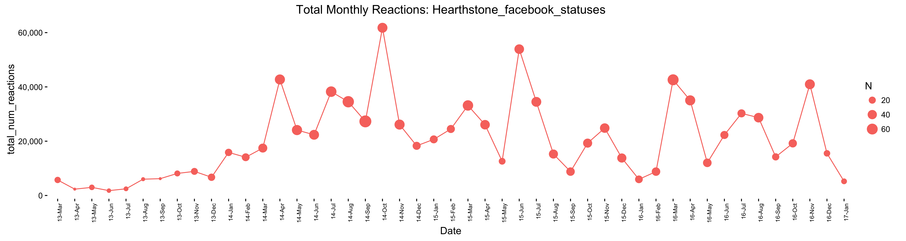
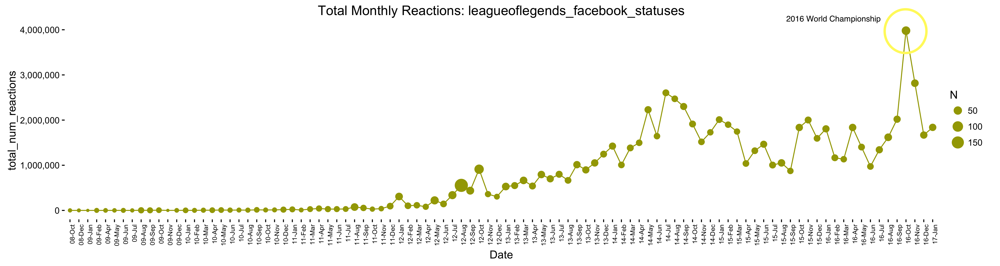
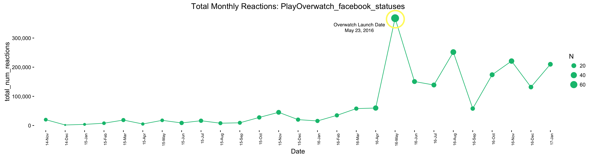
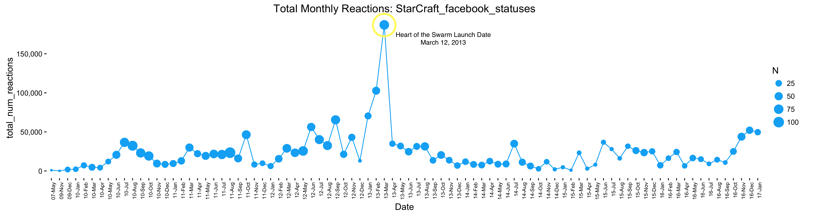
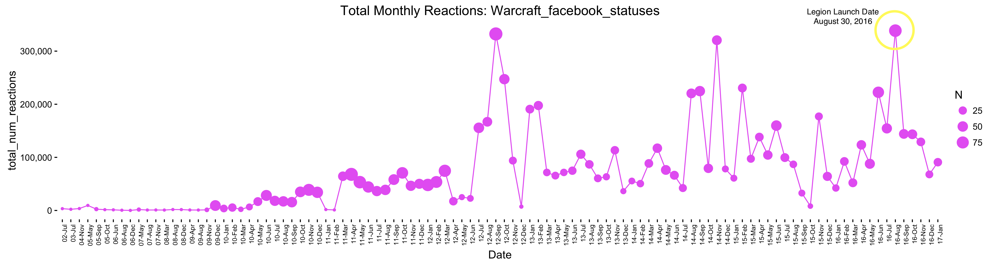
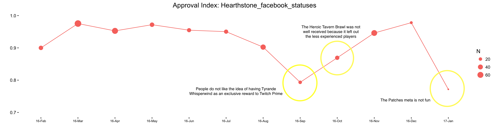
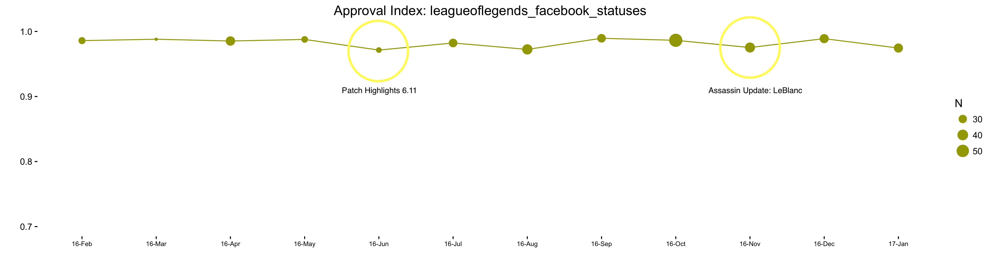
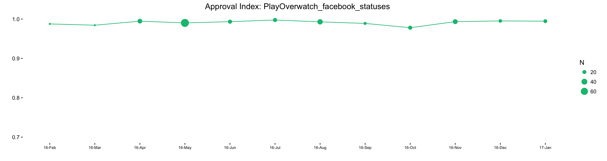
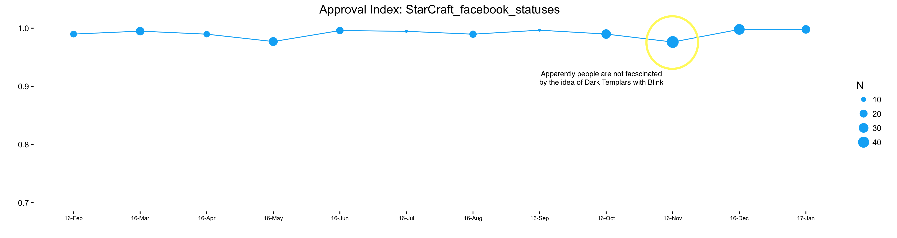
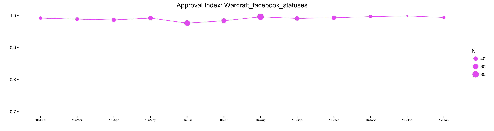

I recenly read a blog post that inspired me to start this project. It used facebook reactions (Likes, Loves, Wows, Angers, etc.) to determine general attitudes on various news outlets, such as CNN and FOX. I thought it would be interesting to proxy the popularity of various eSports titles and their trends by looking at the total monthly reactions to their facebook pages over time.
Methodology
I used a Python script to interact with Facebook's API to obtain statistics for each post on a specific page. Data analysis and visualization were done in R.
Monthly Reactions
The following plots show the total number of monthly reactions for Hearthstone, LoL, Overwatch, Starcraft, and WoW. The size of the nodes represents number of posts in that month.
 Hearthstone has an unexpected low number of Facebook following, given how big its competitive scene is. League has been in a lull since 2014, though the most recent Worlds definitely brough back interest.
 Overwatch has been performing extremely well since launch
 Could this be the come back for Starcraft?
 Legion was definitely a successful exapansion in terms of generating interest.
Player Approval Index
The following plots show the Approval Index for each of the above titles. This index is calculated as the positive emotions (loves, wows, hahas, sads) divided by all emotions (loves, wows, hahas, sads, angrys). We exclude likes from our calculation because it is assumed to be a neutral emotion. Note that this emotions feature was added to facebook in February 2016, so the timeseries below have shortened dates relative to the plots above.
 Hearthstone had a rough year in terms of satisfying its players, including making Tyrande a Twitch Prime exclusive, a Heroic brawl that leaves out new players, and the current anti-fun Patches meta. League has been doing well over the past year, only with a few minor hiccups.
 Overwatch is doing Overwatch things
 Starcraft's upcoming change to DT's wasn't well received
 Last year was a great year for WoW, culminating in the release of the Legion expansion